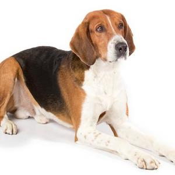

Foxhound Americano

El foxhound americano es un perro de caza desarrollado en Estados Unidos.
Desciende del foxhound inglés, uno de los perros de tipo sabueso más populares
en Reino Unido. Podemos diferenciarlos por las extremidades, notablemente
más largas y finas en los individuos de origen estadounidense, o por el
lomo ligeramente arqueado.
| Origen: |
America-Canadá |
| Altura: |
55-70cm |
| Peso: |
25-45kg |
Ver